library(tinyplot)
aq = transform(
airquality,
Month = factor(month.abb[Month], levels = month.abb[5:9]),
hot = ifelse(Temp>=75, "hot", "cold"),
windy = ifelse(Wind>=15, "windy", "calm")
)Introduction to tinyplot
tinyplot is a lightweight extension of the base R graphics system, designed to simplify and enhance data visualization. This tutorial provides a gentle introduction to the package’s core features and syntax. We won’t cover everything, but you should come away with a solid understanding of how tinyplot works and how it can integrate with your own projects.
We start this tutorial by loading the package and a slightly modified version of the airquality dataset that comes bundled with base R.
Equivalence with plot()
As far as possible, tinyplot tries to be a drop-in replacement for regular plot calls.
par(mfrow = c(1, 2))
plot(0:10, main = "plot")
tinyplot(0:10, main = "tinyplot")
par(mfrow = c(1, 1)) # reset layoutSimilarly, we can plot elements from a data frame using either the atomic or formula methods. Here is a simple example using the aq dataset that we created earlier.
# with(aq, tinyplot(Day, Temp)) # atomic method (same as below)
tinyplot(Temp ~ Day, data = aq) # formula method
Tip:
plt() shorthand alias
Use the plt() alias instead of tinyplot() to save yourself a few keystrokes. For example:
plt(Temp ~ Day, data = aq)Feel free to try this shorthand with any of the plots that follow; tinyplot(<args>) and plt(<args>) should produce identical results.
Grouped data
Where tinyplot starts to diverge from its base counterpart is with respect to grouped data. In particular, tinyplot allows you to characterize groups using the by argument.1
# tinyplot(aq$Day, aq$Temp, by = aq$Month) # same as below
with(aq, tinyplot(Day, Temp, by = Month))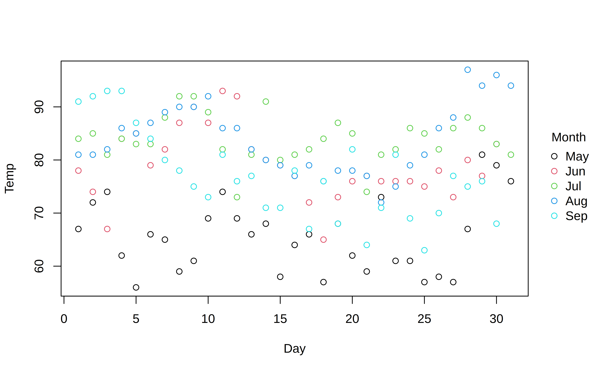
An arguably more convenient approach is to use the equivalent formula syntax. Just place the “by” grouping variable after a vertical bar (i.e., |).
tinyplot(Temp ~ Day | Month, data = aq)
You can use standard base plotting arguments to adjust features of your plot. For example, change pch (plot character) to get filled points and cex (character expansion) to change their size.
tinyplot(
Temp ~ Day | Month, data = aq,
pch = 16,
cex = 2
)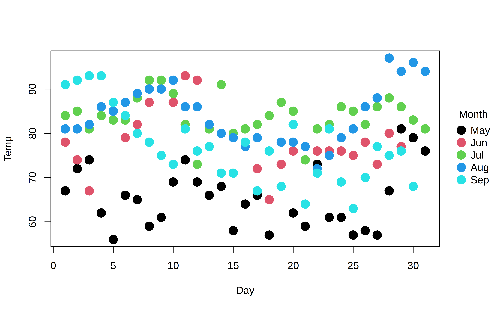
Similarly, converting to a grouped line plot is a simple matter of adjusting the type argument.
tinyplot(
Temp ~ Day | Month, data = aq,
type = "l"
)
The default behaviour of tinyplot is to represent groups through colour. However, note that we can automatically adjust pch and lty by groups too by passing the "by" convenience keyword. This can be used in conjunction with the default group colouring. Or, as a replacement for group colouring—an option that may be particularly useful for contexts where colour is expensive or prohibited (e.g., certain academic journals).
tinyplot(
Temp ~ Day | Month, data = aq,
type = "l",
col = "black", # override automatic group colours
lty = "by" # change line type by group instead
)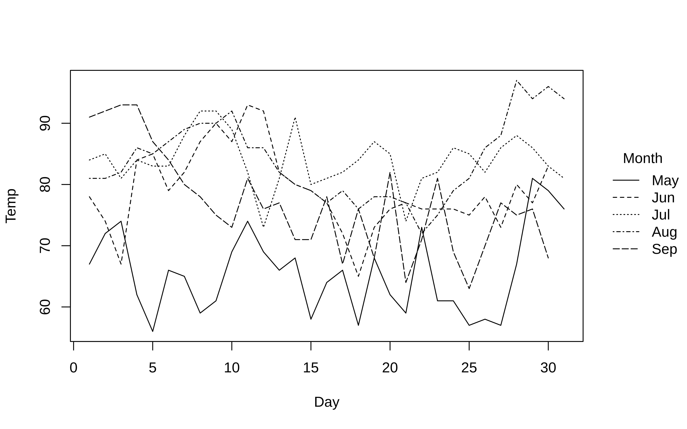
The "by" convenience argument is also available for mapping group colours to background fill bg (alias fill). One use case is to override the grouped border colours for filled plot characters and instead pass them through the background fill.
tinyplot(
Temp ~ Day | Month, data = aq,
pch = 21, # use filled circles
col = "black", # override automatic group (border) colours of points
fill = "by" # use background fill by group instead
)
Colours
On the subject of group colours, the default palette should adjust automatically depending on the class and cardinality of the grouping variable. For example, a sequential (“viridis”) palette will be used if an ordered factor is detected.
tinyplot(
Temp ~ Day | ordered(Month), data = aq,
pch = 16
)
However, this behaviour is easily customized via the palette argument. The default set of discrete colours are inherited from the user’s current global palette. (Most likely the “R4” set of colors; see ?palette). However, all of the various palettes listed by palette.pals() and hcl.pals() are supported as convenience strings.2 Note that case-insensitive, partial matching for these convenience strings is allowed. For example:
tinyplot(
Temp ~ Day | Month, data = aq,
type = "l",
palette = "tableau" # or "ggplot", "okabe", "set2", "harmonic", etc.
)
Beyond these convenience strings, users can also supply a valid palette-generating function for finer control and additional options.3 You can also use the alpha argument to adjust the (alpha) transparency of your colours.
tinyplot(
Temp ~ Day | Month, data = aq,
pch = 19, cex = 2,
palette = "tableau",
alpha = 0.3
)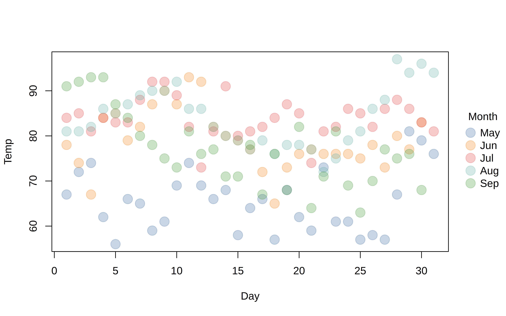
To underscore what we said earlier, colours are inherited from the user’s current palette. So these can also be set globally, just as they can for the base plot function. The next code chunk will set a new default palette for the remainder of the plots that follow.
# Set the default palette globally via the generic palette function
palette("tableau")Legend
In all of the preceding plots, you will have noticed that we get an automatic legend. The legend position and look can be customized with the legend argument. At a minimum, you can pass the familiar legend position keywords as a convenience string ("topright", "bottom", etc.). Moreover, a key feature of tinyplot is that we can easily and elegantly place the legend outside the plot area by adding a trailing “!” to these keywords. (As you may have realised, the default legend position is "right!".) Let’s demonstrate by moving the legend to the left of the plot.
tinyplot(
Temp ~ Day | Month, data = aq,
type = "l",
legend = "left!"
)
Beyond the convenience of these positional keywords, the legend argument also permits additional customization in the form of a list of arguments, which will be passed on to the standard legend() function internally. So you can change or turn off the legend title, remove the bounding box, switch the direction of the legend text to horizontal, etc. Here is a grouped density plot example, where we also add some shading by specifying that the background colour should vary by groups too.
tinyplot(
~ Temp | Month,
data = aq,
type = "density",
fill = "by", # add fill by groups
grid = TRUE, # add background grid
legend = list("topright", bty = "o") # change legend features
)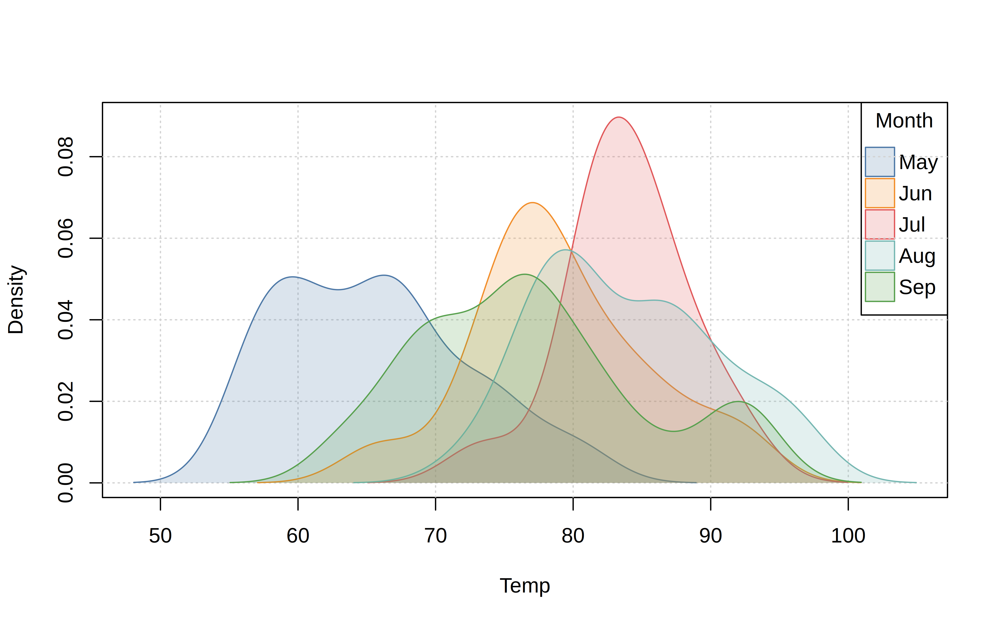
All of the legend examples that we have seen thus far are representations of discrete groups. However, please note that tinyplot also supports grouping by continuous variables, which automatically yield gradient legends.
tinyplot(Temp ~ Wind | Ozone, data = aq, pch = 19)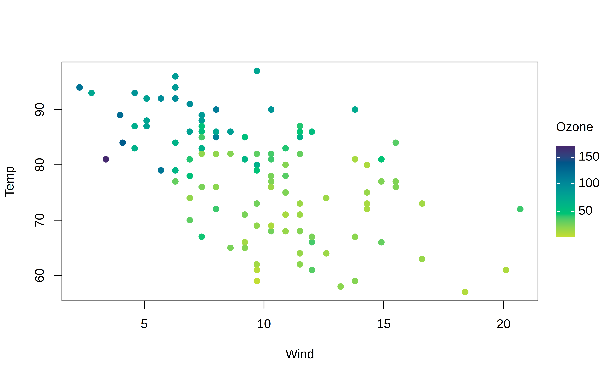
Gradient legends (and plots) can be customized in an identical manner to discrete legends by adjusting the keyword positioning, palette choice, alpha transparency, etc. Here is a quick adaptation of the previous plot to demonstrate.
tinyplot(
Temp ~ Wind | Ozone, data = aq,
pch = 21, # use filled plot character
cex = 2,
col = "black", # override automatic (grouped) border colour of points
fill = 0.5, # use background fill instead with added alpha transparency
)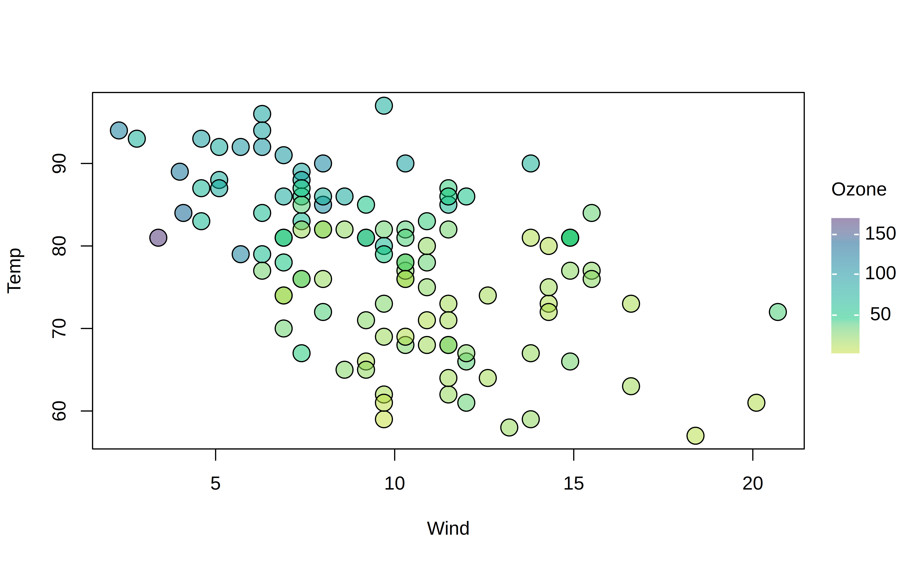
As an aside, note that we passed a numeric convenience argument to fill (alias bg) above. Specifically, when fill is given as a numeric in the range of [0,1] then it automatically inherits the grouped colour mappings, but with corresponding alpha transparency.
More plot types
We’ve already seen several plot types, such as "p" (points), "l" (lines), and "density". In general, tinyplot supports all the primitive plot types and elements available in base R, along with a number of additional types that can be tedious to code manually. You can find the full list of in the dedicated Plot Types vignette. For the moment, we’ll content ourselves with a few illustrative examples.
One such example is the family of “interval” plots provided by the "pointrange","errorbar", "ribbon", and related types. A canonical use-case is coefficient plots.
mod = lm(Temp ~ 0 + Month / Day, data = aq)
# grab coefs of interest
monthcoefs = data.frame(
gsub("Month", "", names(coef(mod))),
coef(mod),
confint(mod)
) |>
setNames(c("term", "estimate", "ci_low", "ci_high")) |>
subset(!grepl("Day", term))
# plot
tinyplot(
estimate ~ term,
ymin = ci_low, ymax = ci_high,
data = monthcoefs,
type = "pointrange", # or: "errobar", "ribbon"
pch = 19, col = "dodgerblue",
grid = TRUE,
main = "Average Monthly Effect on Temperature"
)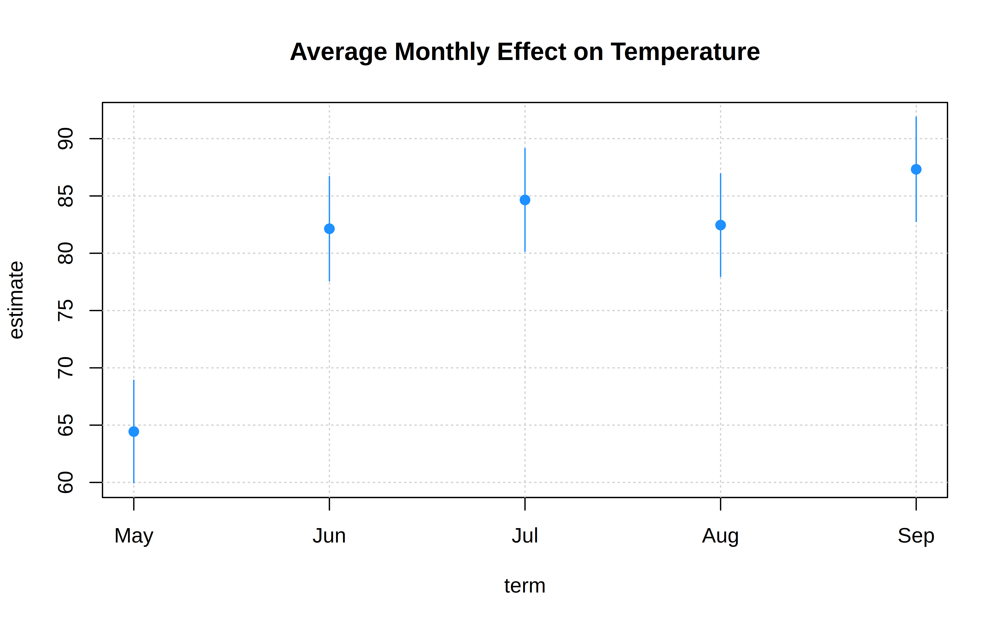
Note that tinyplot also supports special types to fit models and display their predictions, along with confidence intervals. Here is a somewhat silly example where we fit a linear model to predict temperature by day of month.4
tinyplot(
Temp ~ Day | Month, aq,
type = "lm",
grid = TRUE,
main = "Linear model"
)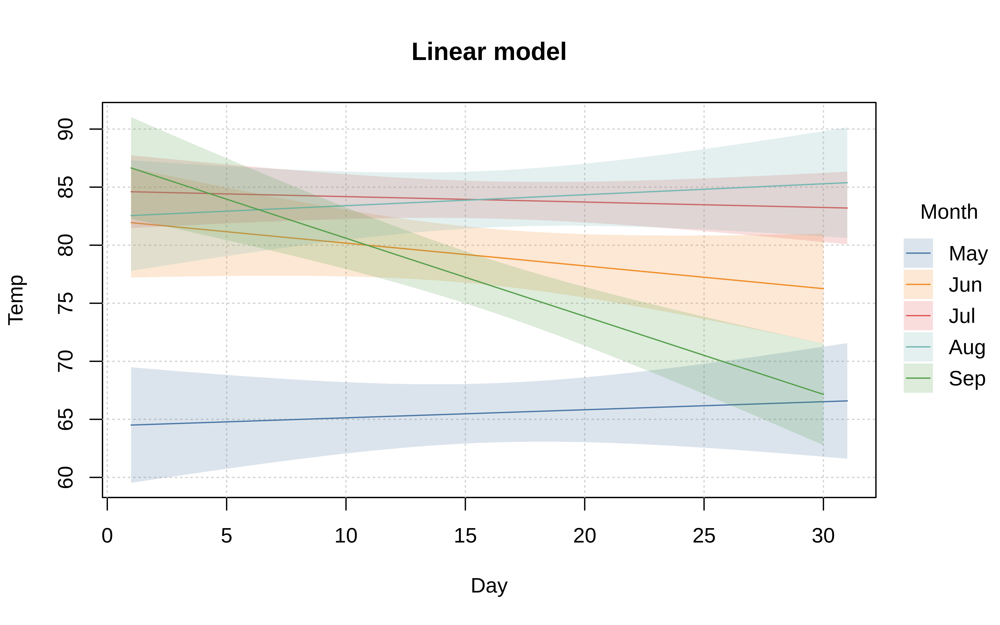
The default behaviour of these model types can be adjusted by passing appropriate arguments to the equivalent functional version of the type in question. These functional types all follow a type_<typename> syntax, so that "lm" is paired with type_lm(), etc. Below we illustrate with an adapted generalised linear model, where we fit a logistic regression passing explicitly passing the binomial family argument.
tinyplot(
I(Temp > 75) ~ Wind, aq,
type = type_glm(family = binomial),
main = "Logit model: Temps above 75 °F"
)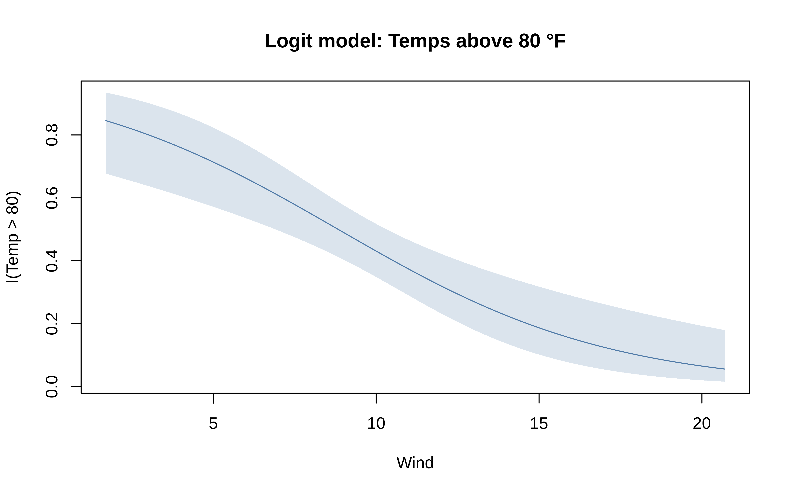
We will see examples of more plot types below, including other model prediction types. Again, please also take a look at the dedicated Plot Types vignette for explicit details about all of the different plot types that tinyplot supports, as well as how to create your own custom types. You can also request support for additional plot types, or see what’s on our roadmap, by heading over to this pinned issue on our GitHub repo.
Facets
Alongside the standard “by” grouping approach that we have seen thus far, tinyplot also supports faceted plots. Mirroring the main tinyplot function, the facet argument accepts both atomic and formula methods. In general, however, we recommend the formula version as being safer since it does a better job of handling missing values.
tinyplot(
Temp ~ Day, aq,
facet = ~Month, ## <= facet, not by
type = "lm",
grid = TRUE,
main = "Predicted air temperatures"
)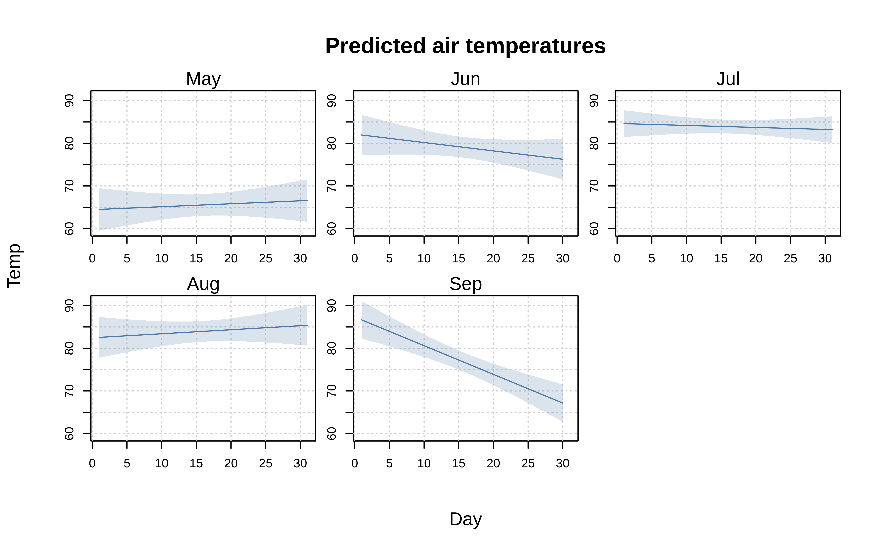
Facets are easily combined with grouping. This can either be done separately (i.e., distinct arguments for by and facet), or along the same dimension. For the latter case, we provide a special facet = "by" convenience shorthand.
tinyplot(
Temp ~ Day | Month, aq,
facet = "by", # facet along same dimension as groups
type = "lm",
grid = TRUE,
main = "Predicted air temperatures"
)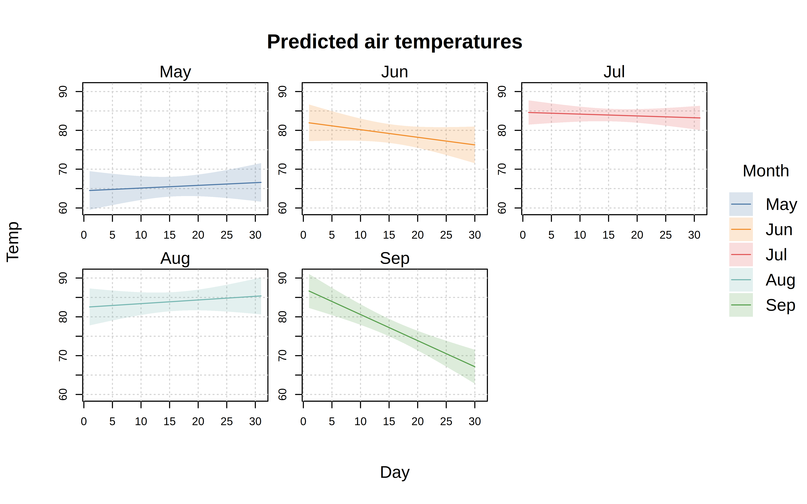
To customize facets, simply pass a list of named arguments through the companion facet.args argument. Customization options include: override the default “square” facet window arrangement; allow free-scaled axes so that the limits of each individual facet are drawn independently; adjust the padding (margin) between individual facets; change the facet title text and background; etc. Here is a simple example where we (1) arrange the facets in a single row, (2) add some background fill to the facet text, and (3) and reduce axis redundancy by turning off the plot frame.
tinyplot(
Temp ~ Day, aq,
facet = ~Month, facet.args = list(nrow = 1, bg = "grey90"),
type = "lm",
grid = TRUE,
frame = FALSE, # turning off the plot frame means only outer axes will be printed
main = "Predicted air temperatures"
)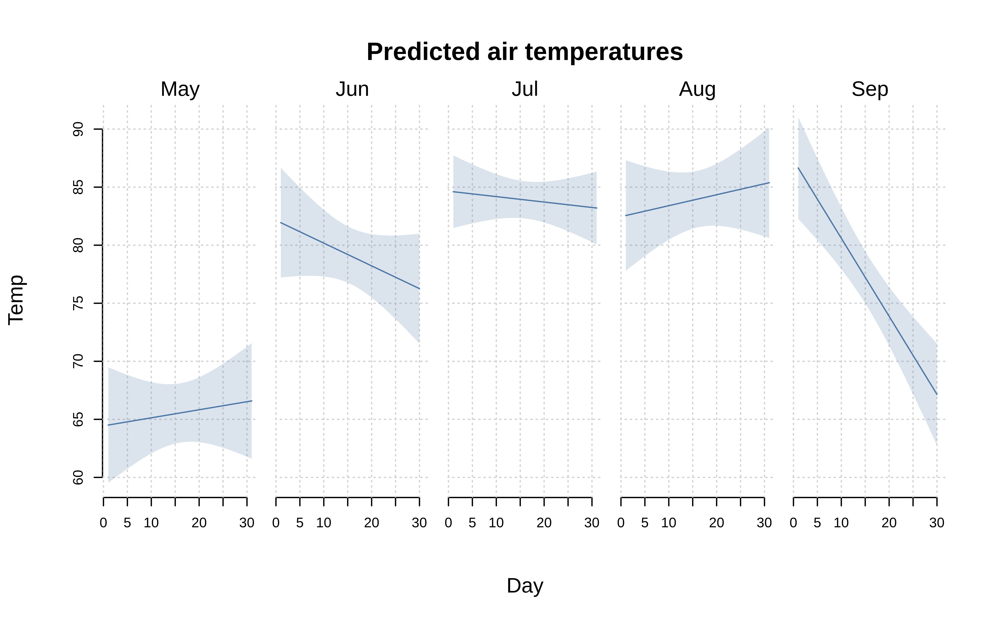
The facet.args customizations can also be set globally via the tpar() function, or as part of a dedicated tinytheme(). We will revisit this idea in the Themes section below.
Finally, the facet argument also accepts a two-sided formula for arranging facets in a fixed grid layout. Here is a simple (if contrived) example.
tinyplot(
Temp ~ Day, data = aq,
facet = windy ~ hot,
# the rest of these arguments are optional...
facet.args = list(col = "white", bg = "black"),
pch = 16, col = "dodgerblue",
grid = TRUE, frame = FALSE, ylim = c(50, 100),
main = "Temps versus wind"
)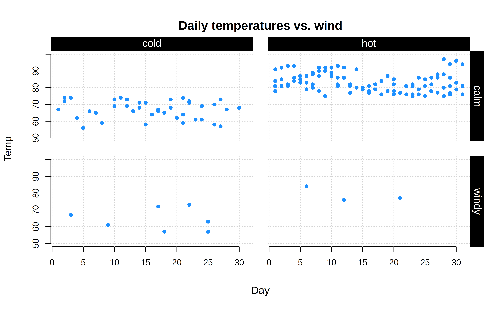
Layers
In many contexts, it is convenient to build plots step-by-step, adding layers with different elements on top of a base. The tinyplot package offers a few ways to achieve this layering effect.
Similar to many base plotting functions, users can invoke the tinyplot(..., add=TRUE) argument to draw a plot on top of an existing one, rather than opening a new window. However, while this argument is useful, it can become verbose since it requires users to make very similar successive calls, with many shared arguments.
For this reason, tinyplot provides a special tinyplot_add() convenience function for adding layers to an existing tinyplot. The idea is that users need simply pass the specific arguments that they want to add or modify relative to the base layer; all others arguments will be inherited from the original call.
An example may help to demonstrate. Here we first draw some faceted points with group colouring and various other aesthetic tweaks. Next, we add regression fits with a simple tinyplot_add(type = "lm") call. Notice that the original grouping, data and aesthetic options are all carried over correctly, without having to repeat ourselves.
tinyplot(
Temp ~ Day | Month, aq,
facet = "by", facet.args = list(bg = "grey90"),
palette = "dark2",
legend = FALSE,
grid = TRUE,
axes = "l",
ylim = c(50, 100),
main = "Actual and predicted air temperatures"
)
# Add regression fits
tinyplot_add(type = "lm")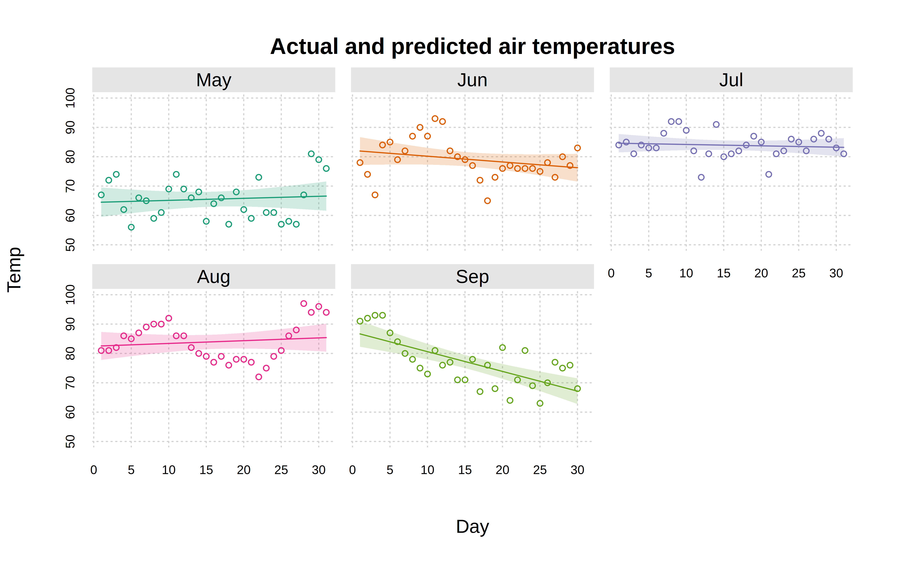
Tip:
plt_add() shorthand alias
Much like plt() is an alias for tinyplot(), you can save yourself a few keystrokes by typing plt_add() instead of tinyplot_add():
plt_add(type = "lm")A related—but distinct—concept to adding plot layers is drawing on a plot. The canonical use case is annotating your plot with text or some other function-based (rather than data-based) logic. For example, you may want to demarcate some threshold values with horizontal or vertical lines, or simply annotate your plot with text. The tinyplot way to do this is by passing the tinyplot(..., draw = <draw_function>) argument. Here we demonstrate with a simplified version of our facet grid example from earlier.
tinyplot(
Temp ~ Day, data = aq,
facet = windy ~ hot,
# draw a horizontal (threshold) line in each facet using the abline function
draw = abline(h = 75, lty = 2, col = "hotpink")
)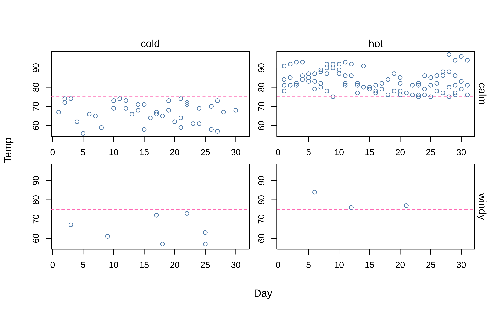
Compared to “manually” drawing these elements on a plot ex post—e.g., via a separate abline() call—there are several advantages to the idiomatic tinyplot interface. First, the draw argument is facet-aware and will ensure that each individual facet is correctly drawn upon. Second, you can leverage the special ii internal counter to draw programmatically across facets (see here). Third, the draw argument is fully generic and accepts any drawing/annotating function. You can combine multiple drawing functions by wrapping them with curly brackets{}, and even pass tinyplot() back towards itself.
Here is a slightly more complicated “spaghetti” plot example, where we pass multiple functions through draw = {...}, including drawing all of the lines in the background (of each facet) via a secondary tinyplot() call.
tinyplot(
Temp ~ Day | Month, aq, facet = "by", lwd = 3, type = "l",
frame = FALSE, legend = FALSE, ylim = c(50, 100),
draw = {
tinyplot(Temp ~ Day | Month, aq, col = "grey", type = "l", add = TRUE)
abline(h = 75, lty = 2)
text(5.5, 75, "Cold", pos = 1, offset = 0.4)
text(5.5, 75, "Hot", pos = 3, offset = 0.4)
}
)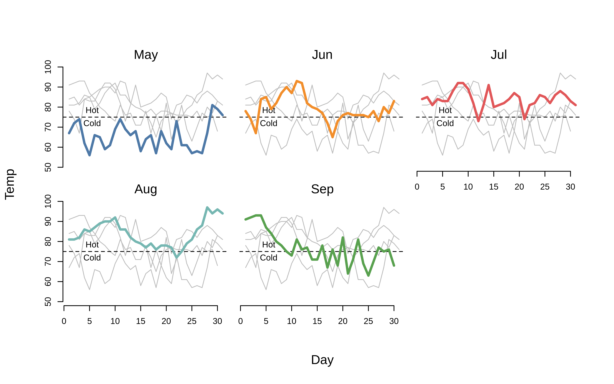
Themes
In the examples thus far, we have adjusted our plot aesthetics manually by tweaking individual arguments and settings. A more convenient way to change the look of your plots is by calling the tinytheme() function. This will modify several graphical settings simultaneously to match a variety of pre-defined styles. In addition to convenience, themes have the added benefit of enabling dynamic adjustment of the plot regions, so that excess whitespace is reduced and long text strings (e.g., horizontal axis labels) are accounted for. Please see the ?tinytheme help page, as well as the dedicated Themes vignette for a detailed overview of tinyplot’s theming functionality. Here we provide a small taster by applying the “dark” theme to one of our earlier plots.
# apply theme
tinytheme("dark")
# plot
tinyplot(
Temp ~ Wind | Ozone, data = aq,
main = "An example of a tinytheme() in action",
sub = "Notice that the subtitle is above the plot"
)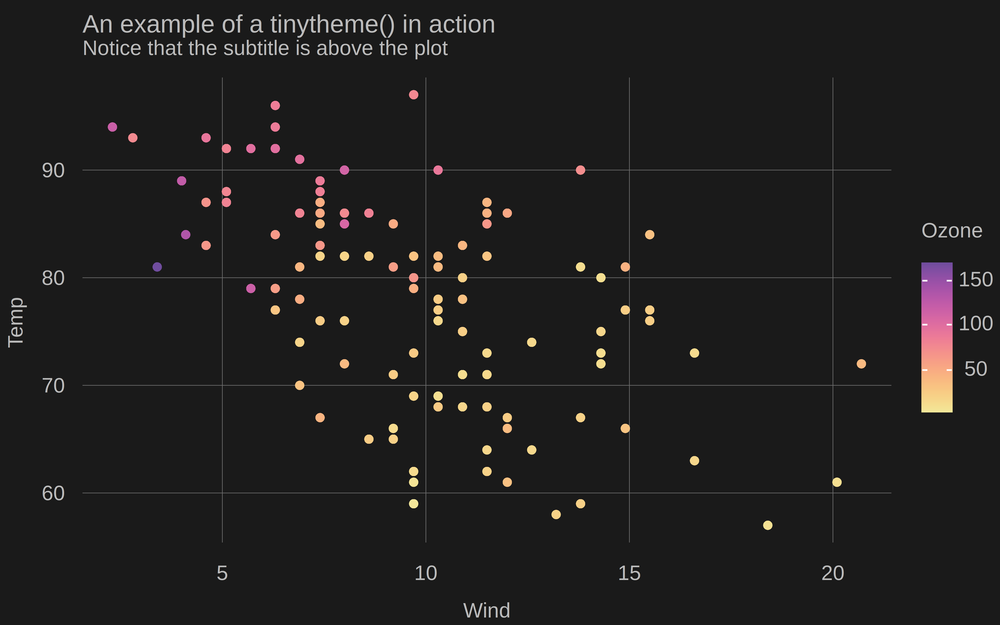
# reset theme to default
tinytheme()Saving plots
A final point to note is that tinyplot offers convenience features for exporting plots to disk. Simply invoke the file argument to specify the relevant file path (including the extension type). You can customize the output dimensions (in inches) via the accompanying width and height arguments.5
tinyplot(
Temp ~ Day | Month, data = aq,
file = "aq.png", width = 8, height = 5
)
# optional: delete the saved plot
unlink("aq.png")Alongside convenience, the benefit of this native tinyplot approach (versus the traditional approach of manually opening an external graphics device, e.g. png()) is that all of your current graphic settings are automatically carried over to the exported file. Feel free to try yourself by setting some global graphics parameters via tpar() and then using file to save a plot.
Conclusion
The goal of this tutorial has been to give you a clear sense of how tinyplot works and what it offers. The take-home pitch is simple: you get to use the same syntax as base R plot(), but with the added benefit of many additional plot types and user-friendly features. Finally, it’s worth noting that tinyplot has no dependencies other than base R itself. We hope that this makes it an attractive and lightweight option for package developers (and regular R users!) who want to create convenient, sophisticated plots with minimal overhead.
Believe it or not, there’s still plenty of tinyplot functionality that we didn’t cover here. If you’d like to keep exploring, we recommend continuing with the Plot types and Themes vignettes. Happy tinyplotting!
Footnotes
At this point, experienced base plot users might protest that you can colour by groups using the
colargument, e.g.with(aq, plot(Day, Temp, col = Month)). This is true, but there are several limitations. First, you don’t get an automatic legend. Second, the baseplot.formulamethod doesn’t specify the grouping within the formula itself (not a deal-breaker, but not particularly consistent either). Third, and perhaps most importantly, this grouping doesn’t carry over to line plots (i.e., type=“l”). Instead, you have to transpose your data and usematplot. See this old StackOverflow thread for a longer discussion.↩︎See the accompanying help pages of those two functions for more details on the available palettes, or read Zeileis & Murrell (2023, The R Journal, doi:10.32614/RJ-2023-071).↩︎
For example, if you have installed the ggsci package (link) then you could use
palette = pal_npg()to generate a palette consistent with those used by the Nature Publishing Group.↩︎The grouped setting here makes this visualization equivalent to
predict(lm(Temp ~ 0 + Month / Day, data = aq), interval = "confidence").↩︎The default dimensions are 7x7, with a resolution of 300 DPI. However, these too can be customized via the
file.width,file.height, andfile.resparameters intpar().↩︎